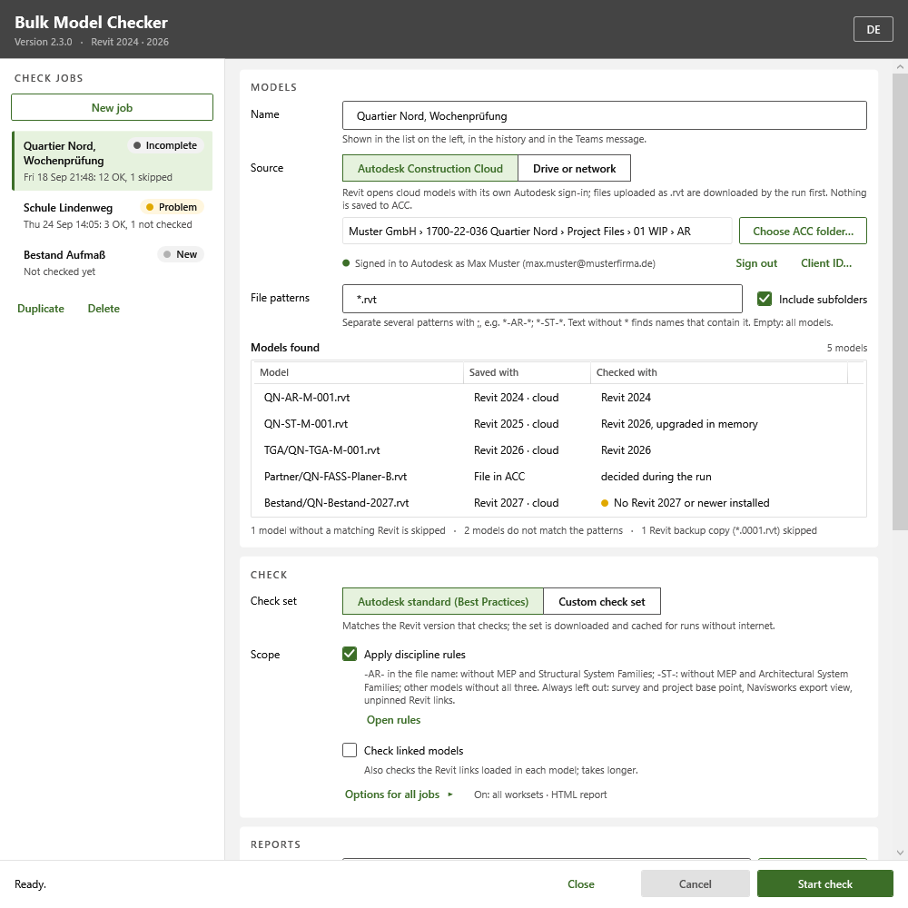
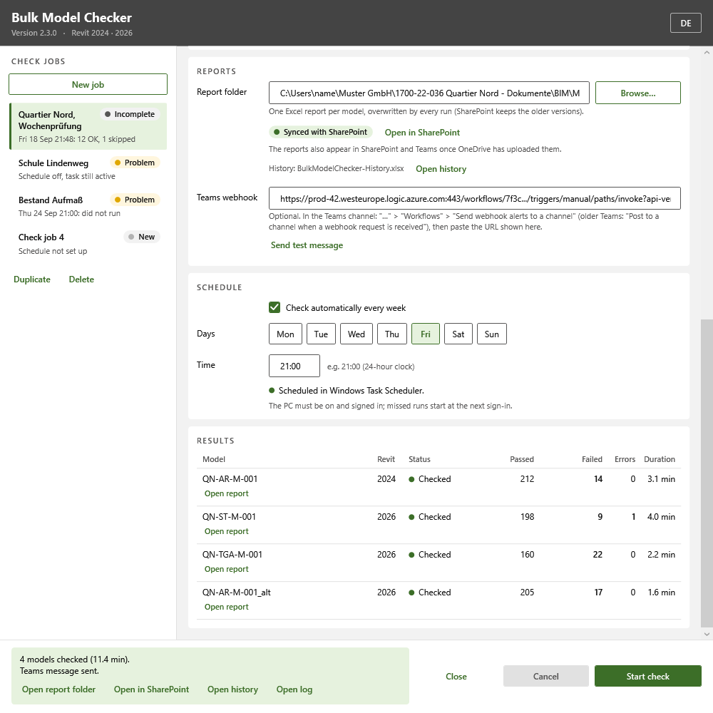
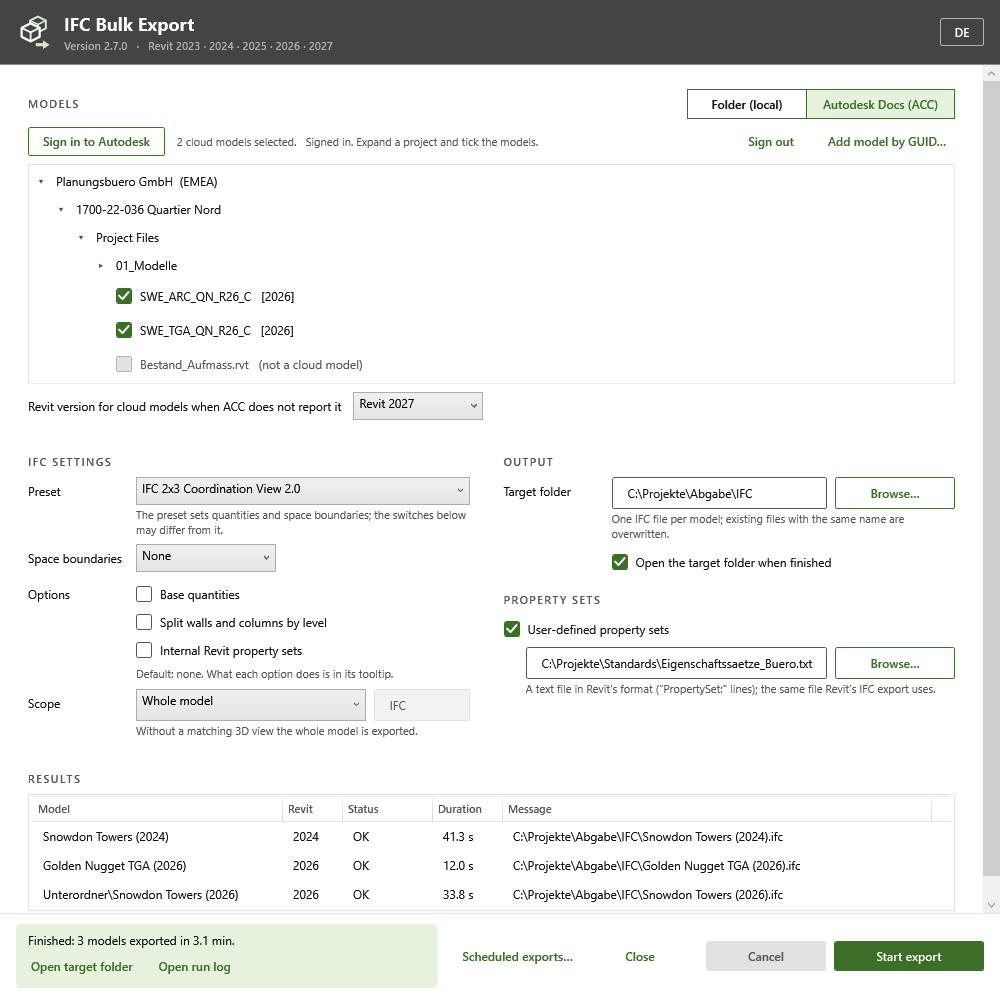

Bulk Model Checker & IFC Bulk Export
One job, many models, nobody operating Revit.
- C#
- .NET Framework 4.8 / .NET 8 / .NET 10
- Revit API 2023 to 2027
- WPF
- Autodesk Platform Services
- Windows Task Scheduler
The problem
Some teams need exactly one batch task, model checks or IFC deliverables, without learning a bigger tool.
What it does
Bulk Model Checker (2.3) runs Autodesk Model Checker over many Revit models, right away or every week, reading them straight from an Autodesk Construction Cloud folder or from a drive or network share. It starts the matching installed Revit with a worker add-in, checks one model after the other and closes Revit again. Each model gets an Excel report (optionally HTML), plus a history table for Power BI and an optional Teams message; the original model is never saved.
IFC Bulk Export (2.7) exports IFC files from many Revit models in one run, from a folder or from Autodesk Docs, with presets, space boundaries and user-defined property sets, and scheduled exports. Nothing is saved to the models.
Both are company-neutral versions with their own names and logos. The same tasks also run together, with NWC, PDF and DWG exports and model reports, in Revit Batch.
See it
Screenshots & demos


